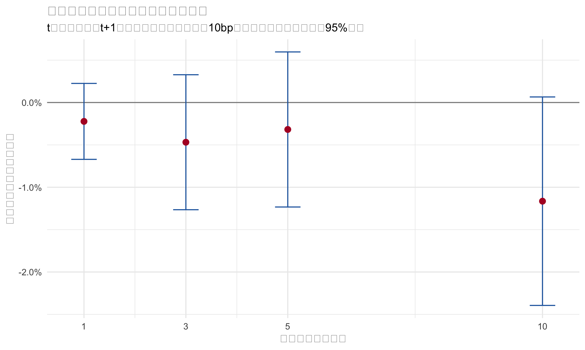

第 18 章 蜡烛图与动态套期保值
18.1 问题现场
套期保值的目标是减少风险，不是让每次对冲单独赚钱。若看跌形态触发减仓后市场继续上涨，对冲会产生机会成本，但这不一定表示风险规则失败。评价必须比较组合波动、回撤、尾部损失和成本，而不仅是信号方向胜率。
18.3 经典形态与市场机制
套期保值通过建立与原风险暴露相反的头寸降低净敏感度。股票组合可用股指期货、ETF或期权对冲；商品经营风险可用相关期货。蜡烛信号只能作为动态调整的一项输入，基础套保比率仍来自暴露、合约乘数、Beta、久期或商品数量。
本章把高风险状态定义为60日回撤低于-8%或20日年化波动率高于75%分位；只有此时出现流星或看跌吞没才触发-1风险警报。它表达“减小多头暴露”，不是建立无限做空。
18.4 可计算定义
若组合市值为 \(V_t\)、相对对冲工具Beta为 \(\beta_t\)、期货价格为 \(F_t\)、乘数为 \(M\)，完全Beta对冲张数近似：
\[ N_t=-\frac{\beta_tV_t}{F_tM}. \]
本章的动态覆盖率设为 \(h_t=0.5I(s_t=-1)\)，即警报时只覆盖50%风险。目标期货张数为 \(h_tN_t\)。真实执行需要取整、保证金、基差和涨跌停约束。
18.5 研究设计
冻结数据没有股指期货，因此主实验只检验风险状态中的看跌信号对AAPL后续下跌是否有识别力。完整套保评价留待加入对冲工具数据。稳健性一：覆盖率25%、50%、75%；稳健性二：警报至少持续2日才调整；稳健性三：设置5日冷却期，控制换手。基准包括不对冲和恒定50%对冲。
18.6 R实现
features <- lab_features()
bearish <- lab_merge_signals(
lab_base_signals()$shooting,
lab_base_signals()$engulfing
)
risk_state <- features$drawdown_60 < -0.08 |
features$rv_20 > stats::quantile(features$rv_20, 0.75, na.rm = TRUE)
signal_r <- ifelse(risk_state & bearish < 0, -1, 0)
hedge_fraction <- ifelse(signal_r < 0, 0.5, 0)
# 加入对冲工具后，用 eBacktestCraft 明确执行价与成本：
config <- eBacktestCraft::default_backtest_config() |>
eBacktestCraft::set_exec_price_col("open") |>
eBacktestCraft::set_transaction_costs(
fee_rate = 0.0003, stamp_tax = 0, slippage_rate = 0.0005
)套保信号应先转换为目标权重，再交给回测引擎。不能把方向列直接当合约张数。
18.7 Python实现
from python.candlestick_lab import load_data, pattern_signal
import numpy as np
from ebacktestcraft import Config, run
panel = load_data()
returns = panel["close"].pct_change()
rv_20 = returns.rolling(20).std() * np.sqrt(252)
high_60 = panel["close"].rolling(60).max()
drawdown = panel["close"] / high_60 - 1
bearish = np.sign(
pattern_signal("shooting").to_numpy()
+ pattern_signal("engulfing").to_numpy()
)
risk_state = (drawdown < -0.08) | (rv_20 > rv_20.quantile(0.75))
panel["weight"] = np.where(risk_state & (bearish < 0), 0.5, 1.0)
config = Config(exec_price_col="open", fee_rate=0.0003, slippage_rate=0.0005)
# result = run(panel_with_hedge_instrument, config=config)示例中的单标的权重只展示减仓逻辑。没有对冲工具价格时，不执行伪“期货套保回测”。
18.8 图形诊断
ch18_signal <- lab_chapter_signal("hedging")
lab_chart(ch18_signal, "2018-01-01", "2024-12-31", "风险警报是否集中在真正的压力期？")
图 18.1: AAPL高回撤或高波动状态中的看跌风险警报。它表示减仓候选，而非必然做空。
检查信号是发生在风险暴露扩大之前还是之后。若警报总在大跌完成后出现，对冲只会锁定损失并承担反弹机会成本。
18.9 证据与稳健性
| sample | events | mean_gross | mean_net | win_rate | ci_low | ci_high |
|---|---|---|---|---|---|---|
| 全部事件 | 94 | -0.0022 | -0.0032 | 0.4681 | -0.0123 | 0.0060 |
| 非重叠事件 | 73 | -0.0012 | -0.0022 | 0.4932 | -0.0125 | 0.0081 |

图 18.2: 风险状态中看跌候选的方向调整净收益；这是套保触发器诊断，不是完整套保绩效。
最终对冲评价应比较年化波动、最大回撤、Expected Shortfall、成本和上涨捕获率。方向平均收益只是触发器诊断。若动态方案不如恒定低成本对冲，应优先选择更简单方案。